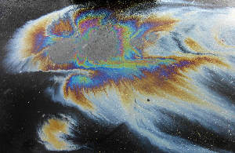
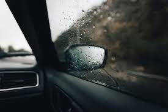

Car Leaks
Car links paragraph

Oil / Liquid Leaks
Leaks are something to always be careful for, engine leaks range from managable to expensive to replace. Coolant leaks are easier to fix, but harder to manage in the long run if left unattended. Transmission leaks are an overall stay away from. If oil is redder, and smells strongly of sulfer, it is a Transmission leak. If it is a brighter color, but doesn't smell, coolant. Then sometimes there will be gas leaks, which are managable depending on the area of leakage, but can be expensive to fix.

Water Leaks
If you are buying a car in a place very prone to rust, checking that there are no leaks coming into the main cabin area of the car could be life changing. If said leaks do exist, it can be stoppable using epoxy or other methods. DIY and youtube are your friends for this. But if the window itself is cracked and leaking, it is best to get a professional to replace it. 9/10 times replacing your own windshield ends in a lot of blood and swear words.